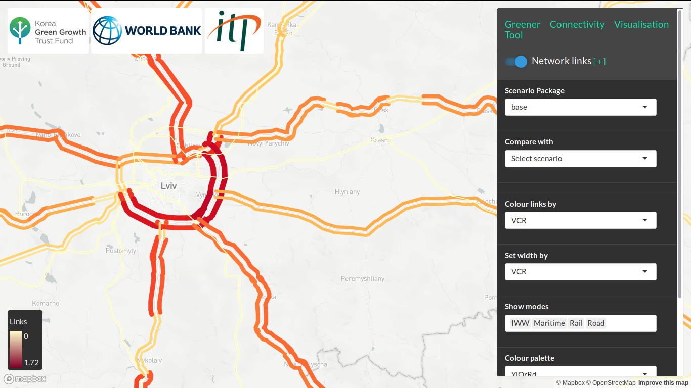
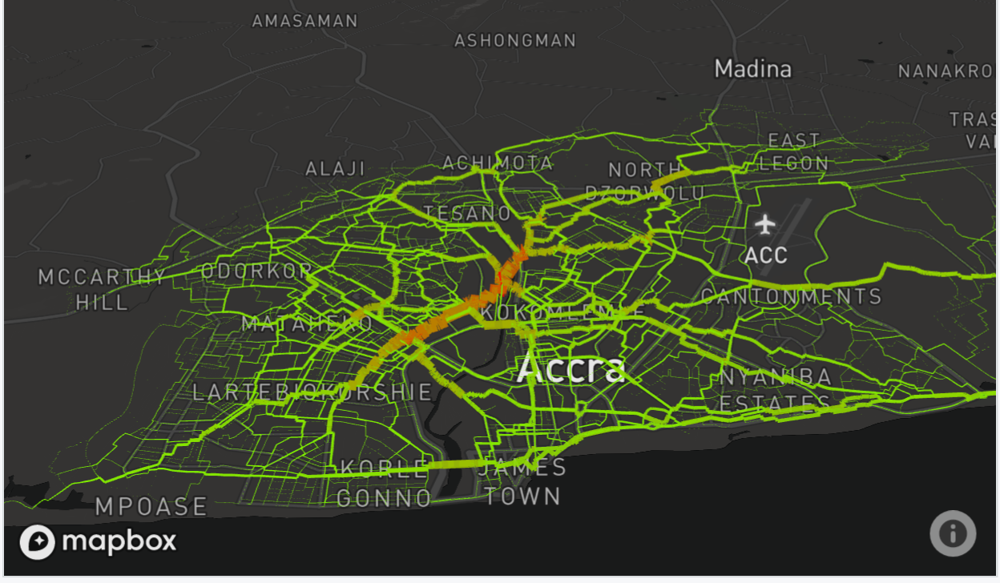
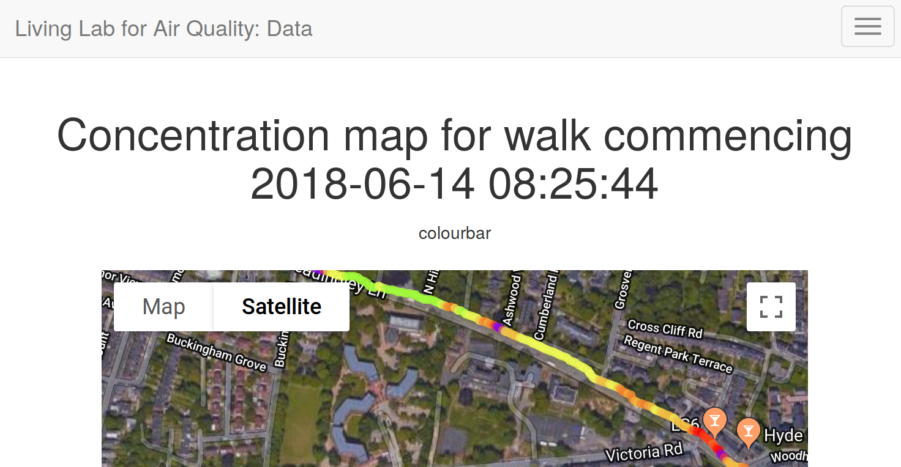

Illustration of new methods for representing 2 way flows on an interactive map using mapbox. Developed for a World Bank funded project.
OptiTruck
Active Transport ToolBox (ATT) - a WHO funded geographic analysis and visualisation project (Lovelace et al. 2018).


Lovelace, R, N Groot, M Adepeju, and M Padgham. 2018. “Estimating Cycling Potential on Route Networks in Accra and Kathmandu.”
Lovelace, Robin, Anna Goodman, Rachel Aldred, Nikolai Berkoff, Ali Abbas, and James Woodcock. 2017. “The Propensity to Cycle Tool: An Open Source Online System for Sustainable Transport Planning.” Journal of Transport and Land Use 10 (1). https://doi.org/10.5198/jtlu.2016.862.